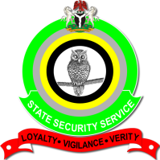

NIGERIAN FORCES
EFCC

EFCC
The Economic and Financial Crimes Commission, EFCC, was established by an Act of the National Assembly on 12th December, 2002 by the administration of President Olusegun Obasanjo. Following the appointment and confirmation by the Senate, of the pioneer Executive Chairman, Mallam Nuhu Ribadu and other administrative officers, the operational activities of the Commission commenced on April 13, 2003.
The establishment of the Commission was partly in response to pressure from the Financial Action Task Force (FATF) on Money Laundering, also known by its French name, Grouped'actionfinancière (GAFI).
GAFI is an intergovernmental organisation founded in 1989 on the initiative of the G7 (Group of Seven), an inter-governmental political forum consisting of Canada, France, Germany, Italy, Japan, the United Kingdom and the United States of America to develop policies to combat money laundering.
FATF had ranked Nigeria as one of the 23 countries that were non-cooperative in the combined efforts to fight money laundering globally. Due to identified inadequacies in the 2002 Establishment Act, the national Assembly repealed it and re-enacted the 2004 Establishment Act was signed into law on 4th June 2004 by President Obasanjo.
Mallam Ribadu, the pioneer chairman of the EFCC, was handed the monumental task to midwife the agency. Within a few months of its emergence on the scene, the Commission had forced itself into public consciousness having taken out of circulation all the 419 kingpins (419 in Nigerian parlance, means offenders whose crimes are contrary to Section 419 of the 1999 Constitution of the Federal Republic of Nigeria (as amended). These where people hitherto considered untouchable. The Fred Ajuduas, the Emmanuel Nwudes, the Maurice Ibekwes, the Ade Bendels, the AmakaAnajembas and the NzeribeOkolis among many others were all arrested and prosecuted.
During his term, outside of the headquarters located in Abuja, the Lagos, Port Harcourt, Enugu, Kano and Gombe Commands were established each representing the geo-political zones of the country, for ease of operation.
In December 2007, Ibrahim Lamorde, DIG, Retd took over the affairs of the Commission in acting capacity and in January 2008 Mrs. Farida Waziri, AIG Retd, was appointed by President Umaru Musa Yar’Adua as the Chairperson of the Commission. Lamorde handed over to Waziri on June 6, 2008 following her clearance and confirmation by the Senate in June 2008.
Following his appointment by President Goodluck Jonathan, Lamorde took over from Mrs. Waziri on November 23, 2011 in acting capacity. He was confirmed as substantive Chairman of the EFCC on February 15, 2012. On November 9, 2015, President Muhammadu Buhari replaced Lamorde with Ibrahim Magu as the acting EFCC chairman.
In about five years at the helms of affairs, Magu established seven Commands and reopened the Maiduguri office earlier opened by Mrs. Farida but closed due to the activities of Boko Haram in the North East. The seven Commands were: Ibadan, Kaduna, Benin, Makurdi, Sokoto, Ilorin and Uyo.
Mohammed Umar Abba, Deputy Commissioner of Police (DCP), on July 9, 2020 took over the affairs of the Commission on interim basis. Seven months after, on February 24, 2021, the Senate of the Federal Republic of Nigeria confirmed Abdulrasheed Bawa, CFE, CAMS, whose name was submitted by President Muhammadu Buhari as the substantive Executive Chairman of the Commission. Bawa took over from Umar Abba on 5th March, 2021.
“Following Wednesday, June 14, 2023, suspension of Mr. Abdulrasheed Bawa, as Executive Chairman by the Federal Government, Mr. Abdulkarim Chukkol stepped in as Acting Chairman of the Commission. Until this new role, Chukkol was the Director of Operations of the Commission.
DSS

DSS
The State Security Service (SSS) or Department of State Services (DSS) has its roots in pre-colonial Nigeria. It formally came into existence in 1948 with the establishment of the then “E” Department (Special Branch) domiciled in the Office of the Inspector General of the Nigeria Police Force.
Following the abortive coup of 1976 during which the then Head of State, General Murtala Mohammed was assassinated, General Olusegun Obasanjo promulgated the NSO Decree No.16 (1976) in one of his foremost national assignments as the Head of State. The Decree witnessed the establishment of the Nigerian Security Organization (NSO), which came in the wake of the security challenge posed by the 1976 abortive coup. The NSO was then charged with the responsibility of timely procurement of relevant and well analyzed intelligence necessary to meet the highlighted challenges and other matters bordering on National Security.
At the inception of General Ibrahim Babangida’s administration in 1985, he overhauled and re-organized the NSO through Decree No. 19 of 1986 also known as National Security Agencies (NSA) Decree, 1986. This exercise witnessed the emergence of three (3) separate establishments, the State Security Service (SSS), Defence Intelligence Service (DIS) and the National Intelligence Agency (NIA). Upon transition from military to civilian rule in 1999, the Service has continued to nurture, preserve and protect the country’s democratic governance.
NPF
NPF
The Nigeria Police Force is the principal law enforcement agency in the country. Nigeria Police was first established in 1820. A 1200-member armed paramilitary Hausa Constabulary was set up. A similar Force was formed in Calabar in 1894 and named “The Niger Coast Constabulary” it was formed under the newly proclaimed Niger Coast Protectorate. In the north, the Royal Niger Company set up the Royal Niger Company Constabulary in 1888 with headquarters at Lokoja and The Lagos Police, which was established in 1896.
When in the early 1900s, the Northern and Southern Nigeria protectorates were declared, the Northern Nigeria Police was formed from a portion of the Constabulary of Royal Niger Company. The portion of the Constabulary of Niger Coast formed the Southern Nigeria Police.
In 1914, the different police forces were merged for “administrative convenience.” From that moment on, the police were administered from Lagos. Its main purpose was to stifle dissent to colonial rule. Asides from a few isolated cases, our Police was never actually an investigating force.
In the 1960s, under the First Republic, these forces were first regionalized and then nationalized. The NPF performed conventional police functions and was responsible for
internal security safety in the general
penitentiary, immigration, and custom house institutions support
Executing military obligations in or outside the country
The British merged the Lagos colony and the southern and northern protectorates in 1913 and named the new colony Nigeria. The northern and southern regional police forces were later merged, in 1930, to form the colony’s first national police “The Nigeria Police Force” (NPF).
In late 1986, the NPF was reorganized nationwide into seven area commands, which superseded a command structure corresponding to each of the States of Nigeria. Each command was under a commissioner of police and was further divided into police provinces and divisions under local officers. NPF headquarters, which was also an area command, supervised and coordinated the other area commands. Later these Area Commands were grouped under Zone Commands as follows: Zone 1, Headquartered Kano, with Kano, Katsina, and Jigawa Commands Zone 2, Headquartered Lagos, with Lagos, and Ogun commands Zone 3, Headquartered Yola, with Adamawa, and Gombe Commands.
In mid-1989 another NPF reorganization was announced after the AFRC's acceptance of a report by Rear Admiral Murtala Nyako. In 1989 the Nigerian Police Force also created a Quick Intervention Force in each state, separate from the mobile police units, specifically to monitor political events and to quell unrest during the transition to civil rule. Each state unit of between 160 and 400 police was commanded by an assistant superintendent and equipped with vehicles, communications gear, weapons, and crowd control equipment, including cane shields, batons, and tear gas. A Federal Investigation Bureau (FIB) was to be set up as the successor to the Directorate of Intelligence and Investigation; three directorates were established for operations, administration, and logistics, each headed by a deputy inspector general.
In February 1989, Ibrahim Babangida abolished the Police Service Commission and established the Nigeria Police Council in its stead, under direct presidential control. The new council was chaired by the president; the chief of General Staff, the minister of internal affairs, and the police inspector general were members. As part of the government reorganization in September 1990, Alhajji Sumaila Gwarzo, formerly SSS director, was named to the new post of minister of state, police affairs.
Sections 214 to 216 of the 1999 Constitution of Nigeria provides for the Nigeria Police Force. Section 214 of the 1999 Constitution (As amended) categorically states that,
"There shall be a Police Force for Nigeria, which shall be known as the Nigeria Police Force, and subject to the provisions of this section, no other police force shall be established for the Federation or any part thereof".
The Police Act, however, regulates the activities of the Police Force. Section 4 of the Police Act provides that,
"The Police shall be employed for the prevention and detection of crime, the apprehension of offenders, the preservation of law and order, the protection of life and property and the due enforcement of all laws and regulations with which they are directly charged"
Officers and men of the Force are deployed across the 36 states of the Federation and the Federal Capital Territory (FCT), Abuja to fight crimes, criminality and ensure the maintenance of law-and-order vis-a-vis peaceful co-existence in the society.
The operational command and control of the Nigeria Police Force is under the Inspector General of Police. Section 215 (1) (a) of the Nigerian Constitution states that,
"There shall be an Inspector-General of Police, who, subject to section 216(2) of this Constitution shall be appointed by the President on the advice of the Nigeria Police Council from among serving members of the Nigeria Police Force"
The Nigerian Police (NP) is designated by the 1999 constitution as the national police of Nigeria with exclusive jurisdiction throughout the country. Constitutional provision also exists, however, for the establishment of separate NPF branches "forming part of the armed forces of the Federation or for their protection of harbours, waterways, railways and airfields."